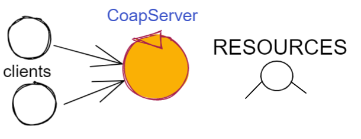

Attori come risorse CoAP¶
Ogni attore ActorQak e QakActor22 è stato definito in modo da essere anche una risorsa CoAP osservabile. In particolare:
un QAkactor di nome
qache opera in un contestoctxqaè una risorsa CoAP osservabile cui è possibile accedere con URI path= ctxqa/qa nella versioneActorQake, nella con URI path = actors/qa, nella versione QakActor22lo stato corrente della risorsa può essere memorizzato come una stringa nella variabile actorResourceRep, utilizzando l’operazione
updateResource.
Prima di approfondire questa nuova caratteristica, conviene richimare alcuni concetti e supporti di base per CoAP.
Introduzione a CoAP¶
Il protocollo CoAP considera le interazioni (client/server) tra componenti come uno scambio di rappresentazioni
di risorse e si pone l’obiettivo di realizzare una infrastruttura di gestione delle risorse tramite alcune semplici
funzioni di accesso e interazione come quelle di HTTP: PUT, POST, GET, DELETE.
Per interagire con una risorsa CoAP si può usare un oggetto di classe
org.eclipse.californium.core.CoapClientche invia richieste all’URIspeficato come argomento del costruttore, come ad esempio:"coap://"+hostaddress + ":5683/"+ resourcePath
le risorse allocate su un nodo sono istanze della classe
org.eclipse.californium.core.CoapResourcee sono gestite da un server di classeorg.eclipse.californium.core.CoapServer. Questo server realizza già funzioni analoghe a quelle da IContext.La classe CoapConnection implementa Interaction2021 e quindi realizza il nostro concetto genrale di connessione, tenendo conto delle caratteristiche del protocollo CoAP e della libreria californium.
CoAP fornisce un modello di interazione ancora punto-a-punto ma, essendo di tipo REST, il suo utilizzo implica schemi di comunicazione simili a quelli di applicazioni Web basate su
HTTP, ma schemi organizzativi basati su gerarchie di risorse;l’uso di CoAP modifica il modello concettuale di riferimento per le interazioni, in quanto propone l’idea di accesso in lettura (
GET) o modifica (PUT) a risorse identificate daURIattraverso un unico server (che californium offre nella classe org.eclipse.californium.core.CoapServer).le risorse CoAP sono organizzate in una gerarchia ad albero, come nell’esempio della figura che segue:
La definizione di una risorsa applicativa può essere definita come specializzazione della classe org.eclipse.californium.core.CoapResource di californium.
{kind=link}
{kind=link}
Siamo dunque di fronte a un modello simile a quanto introdotto in Schema generale del framework, ma con
una forte forma di standardizzazione sia a livello di ‘verbi’ di interazione (GET/PUT/...) sia a livello di
organizzazione del codice applicativo (come gerarchia di risorse).
Per utilizzare il framework iniziale con protocollo CoAP non dovremo quindi scrivere molto altro codice: si veda CoapContextServer.
Actor22-CoAP¶
Un attore
QakActor22 extends it.unibo.kactor.ActorBasicma non vive init.unibo.kactor.QakContext; vive inQak22Context.CoapApplServer: Viene creato da
Qak22Context.InitCoapIl metodo
setActorAsLocalintroduce un attore di nome a nella gerarchia delle risorse, invocando:CoapApplServer.getTheServer().addCoapResource(a, "actors");
Esempio di Attore-CoAP¶
Progetto: unibo.actor22 code: unibo.actor22.coap.TestCoap.
ActorCoapDemo¶
public class ActorCoapDemo extends QakActor22FsmAnnot{
private int n = 0;
public ActorCoapDemo(String name) {
super(name);
}
@State( name = "init", initial=true)
@Transition( state = "s0" ) //empty move
protected void init( IApplMessage msg ) {
outInfo(""+msg );
}
@State( name = "s0" )
@Transition( state = "s1" , msgId = SystemData.demoSysId )
protected void s0( IApplMessage msg ) {
outInfo(""+msg );
n++; //Uncomment to go in s1
this.updateResourceRep("n="+n);
this.autoMsg( SystemData.demoSysCmd( getName(),getName() ) );
}
@State( name = "s1" )
protected void s1( IApplMessage msg ) {
outInfo(""+msg );
//System.exit(0);
}
}
ActorObserver for ActorCoapDemo¶
public class ActorObserver {
private CoapObserveRelation relation = null;
private CoapClient client = null;
public ActorObserver(){
client = new CoapClient("coap://localhost:8073/actors/a1");
}
public void observe( ) {
relation = client.observe(
new CoapHandler() {
@Override public void onLoad(CoapResponse response) {
String content = response.getResponseText();
ColorsOut.outappl("ActorObserver | value=" + content, ColorsOut.GREEN);
}
@Override public void onError() {
ColorsOut.outerr("OBSERVING FAILED (press enter to exit)");
}
});
}
}
MainDemoCoap¶
@Context22(name = "ctx", host = "localhost", port = "8073")
@Actor22(name = "a1",contextName="ctx",implement = CoapDemo.class)
public class MainDemoCoap {
protected void configure() throws Exception {
CommSystemConfig.tracing = true;
sysUtil.INSTANCE.setTrace(true);
Qak22Context.configureTheSystem(this);
CommUtils.delay(1000); //Give time to start ...
Qak22Context.showActorNames();
new ActorObserver().observe();
}
public static void main(String[] args) throws Exception {
CommUtils.aboutThreads("Before start - ");
new MainDemoCoap().configure();
CommUtils.aboutThreads("At end - ");
}
}